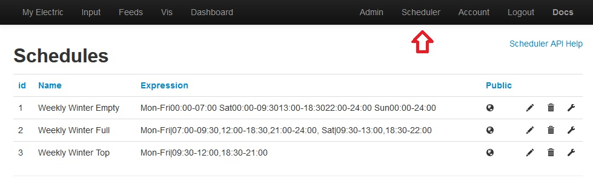
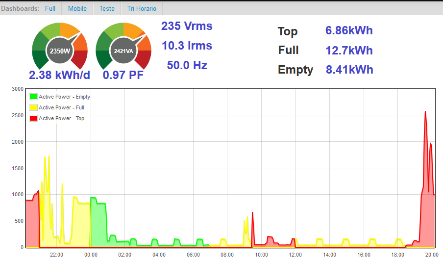
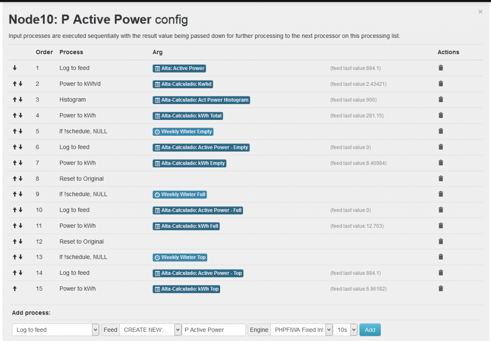

Multi-rate are offerings some distribution companies make to charge diferent prices for different days/hours of the year.
I want this support on EmonCMS. So i dig into it and start developping a new process that you can add to an input and will act conditionaly on the input value depending on the current date and time.
This topic is about already discussed considerations on the follow topics:
http://openenergymonitor.org/emon/node/2499
http://openenergymonitor.org/emon/node/3915
Give your requirements if you have any idea that could be implemented also.
So far i've completed developement of FR1 - FR4. Will release soon on github.(Edit: done!)
Let me know if you can help develope FR5 to FR7 requirents.
Functional Requirements:
FR1 - Allow to specify any range from any starting to end day, month, hour or minute.
FR2 - Have any defined feed only updated for the specified time condition and allow next process in chain to act acordingly.
FR3 - New proccess function in input\process_model.php
FR4 - New Scheduler module with database and multiuser configuration schedules support.
FR5 - Javascript date picker style GUI to easy build a schedule expression.
FR6 - New visualization table that supports multiple feeds on the same graphic with different prices defined for each feed and combined prices per day/month/year on the fly.
FR7 - Use redis caching.
I've come to this single line syntax examples for define time ranges:
'12:00-23:59'
'Mon-Fri | 00:00-23:59'
'Summer | Mon-Fri | 00:00-23:59'
'Winter | Mon-Fri | 00:00-23:59'
'Winter | Mon-Fri | 09:00-09:59, Summer | Mon-Fri | 08:00-08:59'
'Mon,Wed | 00:00-06:00, 12:00-00:00, Fri-Sun | 00:00-06:00, 12:00-00:00'
'12/25 | 00:00-23:59'
'12/01 - 12/31 | Sat,Sun | 09:00-11:59, 13:00-19:59'
'01/15, 02/29, 01/01-02/18, 08/01-12/25, 09/19 | Mon-Fri | 12:00-14:14, 18:00-22:29, Thu | 18:00-22:44'
'Mon-Fri|00:00-06:59, Sat|00:00-09:29,13:00-18:29,22:00-23:59, Sun|00:00-23:59' <- Weekly Winter Empty
'Mon-Fri|07:00-09:29,12:00-18:29,21:00-23:59, Sat|09:30-12:59,18:30-21:59' <- Weekly Winter Full
'Mon-Fri|09:30-11:59,18:30-20:59' <- Weekly Winter Top
'Mon-Fri|00:00-06:59, Sat|00:00-08:59,14:00-19:59,22:00-23:59, Sun|00:00-23:59' <- Weekly Summer Empty
'Mon-Fri|07:00-09:14,12:15-23:59, Sat|09:00-13:59,20:00-21:59' <- Weekly Summer Full
'Mon-Fri|09:15-12:14' <- Weekly Summer Top
Bellow is the new Scheduler configuration GUI module.

Re: EmonCMS multi rate scheduler
Showing off the results of the new features. :)
This are the multi-graph for the multi-rate calculations for the same input being derived to 3 feeds for each scheduled time interval and 3 feeds with total kWh for each schedule also :

Here is the used processlist configuration for the power input:

Re: EmonCMS multi rate scheduler
Hi,
This looks really good !!!
Looking forward trying it.
Eric
Re: EmonCMS multi rate scheduler
That looks awesome, looking forward to trying it out.
Re: EmonCMS multi rate scheduler
As a portuguese user this is REALLY an awesome feature :D
In my case I have 4 different rates per day! Let's see if I can manage to install it :)
Edit: Ups, I though this was already an existing module in github but it seems it isn't. chaveiro where can I get this module? :)
Re: EmonCMS multi rate scheduler
Bruno - this is a development project, having answered many of your other posts about a range of issues I think you should get a feel for the tried and tested stuff that help is on hand for and resolve some of the more basic issues before delving into this.
Paul
Re: EmonCMS multi rate scheduler
This is a needed feature, thank you. In southern California, we have time-of-use OR amount-of-use pricing plans. Check out all of the options... this is just residential!
https://www.sce.com/wps/portal/home/residential/rates/residential-plan/!ut/p/b1/hc9Bb4JAEAXg3-KBo-yDte7qbUkoLm2kimlxLw00uJIga5BK_PfdGi-mauf2Jt9LZogiGVFNfqx03lWmyevfrMafHo_ETKaQPKAhZIBkLpYCLwwWrC3AnRH4r_9B1DWJ3p5GkDFbgbHU48_sD1gy34L38DUJPB_cv4BJhHAWJxasFhSSLjBPhaDA-AIeHBkTpWtTnB9ei6agXBPVlpuyLVv3u7XrbdftD1MHDvq-d7Uxui7dL7NzcKuyNYeOZNeS7HcZKjlUxakf_AD6d_A9/dl4/d5/L2dBISEvZ0FBIS9nQSEh/
Re: EmonCMS multi rate scheduler
Oh, and it would be nice to incorporate a feature where the billing "start day" could be defined: it is almost never the 1st of the month. At my house thbe billing cycle is the 11th of the month, and one month is calculated from 11th of Jan to 11th of Feb etc.
Would love to be able to calculate cost on a user-defined billing cycle.
Re: EmonCMS multi rate scheduler
You are right Paul! I found this thread while I was searching for other threads that could have some information to solve some of my doubts and got excited with the possibility to have this on EmonCMS :p
This can wait :)
Re: EmonCMS multi rate scheduler
Hi,
This is already on Extended branch, official github is here :
https://github.com/emoncms/emoncms/tree/Extended
As of today there is a commit waiting for merge that fix some issues with graphs on mobile devices and adds touch support, ask for the merge to Trystan or get it directly from here:
https://github.com/chaveiro/emoncms/tree/Extended
Re: EmonCMS multi rate scheduler
Pull request merged into extended thankyou Chaveiro
Re: EmonCMS multi rate scheduler
Hi Chaveiro, how is it possible to account for summer /winter time automatically? your example works only on winter time?
Re: EmonCMS multi rate scheduler
Hi Chaveiro.
Save me some work.
Are those schedule for the Portuguese distribuition company EDP?
Remember me from the Thomson firmware tweaking with JTAG?
Best Regards.
Re: EmonCMS multi rate scheduler
Hi.
I've came up with some expressions for winter and summer, but it seems to have some problems:
If I understood correctly correctly the pipe "|" means "or" and the comma "," means "and". I would use a more universal "&" for "and" and "|" for "or" but that doesn't metter.
Until now the Eco and Normal worked but the Cheias didn't, the expression returns false when it should return true. now (09:54 28-10-2015) is in "Winter | Mon-Fri | 09:30-11:59"
I will try to look at the javascript code and try to understand how it works to see if I can deduce where the error comes from.
Best Regards.
Re: EmonCMS multi rate scheduler
Hi, what is the timezone setting on emoncms for your user?
Re: EmonCMS multi rate scheduler
Hi.
I'm in Portugal. UTC / GMT +0 Lisbon, London as you wish...
Best Regards.
Re: EmonCMS multi rate scheduler
In /user/view the setting is Europe/Lisbon or UTC ?
Also please post the debug text that appears when you click the eye icon next to that schedule rule.
The meaning of the operation characters:
As a note, that expression can also be written more efficiently as:
Winter|Mon-Fri|09:30-11:59,18:30-20:59 , Summer|Mon-Fri|09:15-12:14
Off topic: Só reparei agora que já tinhas falado disto, sou o mesmo do forum dos thomson. :)
Re: EmonCMS multi rate scheduler
Hi chaveiro, don't forget my question!
br
Re: EmonCMS multi rate scheduler
Hi.
In user setting was UTC (GMT +00:00), I changed now to Europe/Lisbon (GMT +00:00) but I believe it is the same...
Now the "Normal" applies and returns TRUE, but that should have already happen this afternoon and didn't.
I was thinking of a way to test other dates/times but I don't want to mess with the computer date... A data/time selection to test the schedule against would be cool...
Here is a graph that shows the times no schedule was applied (The rules for the schedules are the ones from my post @10:55.

Off topic:
I've made some changes to the dial widget, here is the code it you want to use it:
Re: EmonCMS multi rate scheduler
I've been testing and now this expression should return false but it returns true:
Summer | Mon | 13:00-21:59,23:00-23:59, Wed | 15:30-18:30,22:00-23:59, Winter | Mon |19:30-20:29,22:00-23:59
I believe that there is some problem with the winter and summer usage in the same expression.
What is the file that has the code that analyzes the expressions so I can analise it and try to understand the code?
Alert Output:
Schedule expression returned 'true'.Details:Expression =Summer | Mon | 13:00-21:59,23:00-23:59, Wed | 15:30-18:30,22:00-23:59, Winter | Mon |19:30-20:29,22:00-23:59Input =22:50:35 Wed 28-10-2015 0 GMT+0000Day =00:00:00 Wed 28-10-2015 0 Europe/LisbonHrMin =22:50:35 Wed 28-10-2015 0 Europe/LisbonWeekDay =Wed________________________________________MATCHArray( [0] => Summer | Mon | 13:00-21:59,23:00-23:59, [1] => Summer | [dst] => Summer [2] => Summer [3] => [4] => Summer [5] => [days] => [6] => [7] => [8] => [9] => Mon | [daysweek] => Mon [10] => Mon [11] => [12] => Mon [hours] => 13:00-21:59,23:00-23:59, [13] => 13:00-21:59,23:00-23:59, [14] => 23:59, [15] => 23:59)________________________________________MATCHArray( [0] => Wed | 15:30-18:30,22:00-23:59, [1] => [dst] => [2] => [3] => [4] => [5] => [days] => [6] => [7] => [8] => [9] => Wed | [daysweek] => Wed [10] => Wed [11] => [12] => Wed [hours] => 15:30-18:30,22:00-23:59, [13] => 15:30-18:30,22:00-23:59, [14] => 23:59, [15] => 23:59) Wed <- FOUND A WEEKDAYH 15:30-18:30 15:30-18:30 ---->Wed 2015-10-28 15:30:00 Europe/Lisbon - Wed 2015-10-28 18:30:59 Europe/Lisbon ? Wed 2015-10-28 22:50:35 Europe/LisbonH 22:00-23:59 22:00-23:59 ---->Wed 2015-10-28 22:00:00 Europe/Lisbon - Wed 2015-10-28 23:59:59 Europe/Lisbon ? Wed 2015-10-28 22:50:35 Europe/Lisbon <- FOUND A HOUR1________________________________________MATCHArray( [0] => Winter | Mon |19:30-20:29,22:00-23:59 [1] => Winter | [dst] => Winter [2] => Winter [3] => [4] => Winter [5] => [days] => [6] => [7] => [8] => [9] => Mon | [daysweek] => Mon [10] => Mon [11] => [12] => Mon [hours] => 19:30-20:29,22:00-23:59 [13] => 19:30-20:29,22:00-23:59 [14] => 23:59 [15] => 23:59) Mon________________________________________MATCHArray( [0] => [1] => [dst] => [2] => [3] => [4] => [5] => [days] => [6] => [7] => [8] => [9] => [daysweek] => [10] => [11] => [12] => [hours] => [13] => )
Update:
I've found the php where the expression is tested, I will try to understand it to see if I can get to the error that causes the test expression to give the incorrect result.
Is there a reason not to remove the expression spaces right in the beginning instead of several times later?
I've updated my expressions to this (Some errors corrected and where improved as you suggested):
Eco
Winter|Mon-Fri|00:00-06:59,Sat|00:00-09:29,13:00-18:29,22:00-23:59,Sun|00:00-23:59,Summer|Mon-Fri|00:00-06:59,Sat|00:00-08:59,14:00-19:59,22:00-23:59,Sun|00:00-23:59
Normal
Winter|Mon-Fri|07:00-09:29,12:00-18:29,21:00-23:59,Sat|09:30-12:59,18:30-21:59,Summer|Mon-Fri|07:00-09:14,12:15-23:59,Sat|09:00-13:59,20:00-21:59
Cheias
Winter|Mon-Fri|09:30-11:59,18:30-20:59,Summer|Mon-Fri|09:15-12:14
Best Regards.
Re: EmonCMS multi rate scheduler
Cidi,
The expression was executed at 22:50:35 Wed 28-10-2015 0 GMT+0000
Summer | Mon | 13:00-21:59,23:00-23:59,
Wed | 15:30-18:30,22:00-23:59, <- Wed 22:50 fits here
Winter | Mon |19:30-20:29,22:00-23:59
It's returning true on the bold part, it is correct.
Re: EmonCMS multi rate scheduler
cab123: I dont understand your question, can you give an example of what you want?
Re: EmonCMS multi rate scheduler
Hi Chaveiro.
The expression says Summer, the present date is winter.
So 22:50:35 Wed 28-10-2015 0 GMT+0000, does not fit the winter part of the expression:
Winter | Mon |19:30-20:29,22:00-23:59
Cheers.
Re: EmonCMS multi rate scheduler
Again.
I believe I understood it.
If we select various hours intervals it will assume they are on the same day/day interval of the before, but if we specify a day/day interval it will not be interpreted as the same day light period as the one before.
So we have to spec iffy the Winter/Summer for each day/day interval or it will be applied without distintion of winter/summer.
I changed my rules to this, and I believed that it answers cab123 question:
Cheers.
Re: EmonCMS multi rate scheduler
I think i got it, i've set up the schedulers like this:
Re: EmonCMS multi rate scheduler
cab123:
It seems you enhanced the expression on overlapping periods that are the same in summer and winter.
I will do that to my expression too and post it later.
Best Regards.
Re: EmonCMS multi rate scheduler
Nice you figure it out.
As a reference this is what im using for PT.
Tri Weekly Empty
Winter|Mon-Fri|00:00-06:59, Winter|Sat|00:00-09:29,13:00-18:29,22:00-23:59, Winter|Sun|00:00-23:59 , Summer|Mon-Fri|00:00-06:59, Summer|Sat|00:00-08:59,14:00-19:59,22:00-23:59, Summer|Sun|00:00-23:59
Tri Weekly Full
Winter|Mon-Fri|07:00-09:29,12:00-18:29,21:00-23:59, Winter|Sat|09:30-12:59,18:30-21:59 , Summer|Mon-Fri|07:00-09:14,12:15-23:59, Summer|Sat|09:00-13:59,20:00-21:59
Tri Weekly Top
Winter|Mon-Fri|09:30-11:59,18:30-20:59 , Summer|Mon-Fri|09:15-12:14
Bi Weekly Empty
Winter|Mon-Fri|00:00-06:59, Winter|Sat|00:00-09:29,13:00-18:29,22:00-23:59, Winter|Sun|00:00-23:59 , Summer|Mon-Fri|00:00-06:59, Summer|Sat|00:00-08:59,14:00-19:59,22:00-23:59, Summer|Sun|00:00-23:59
Bi Weekly Full
Winter|Mon-Fri|07:00-23:59, Winter|Sat|09:30-12:59,18:30-21:59 , Summer|Mon-Fri|07:00-23:59, Summer|Sat|09:00-13:59,20:00-21:59
Re: EmonCMS multi rate scheduler
Hi.
My last changes and improvements gave this for Weekly Tri schedule on EDP Portugal (Also Applies to bi, normally the meters are tri even when the tariff is bi so we can check the three).
Eco:
Mon-Fri | 00:00-06:59, Sun | 00:00-23:59, Sat | 00:00-08:59,14:00-18:29,22:00-23:59, Winter | Sat | 09:00-09:29,13:00-13:59, Summer | Sat | 18:30-19:59
Normal
Mon-Fri | 07:00-09:14,12:15-18:29,21:00-23:59, Sat | 09:30-12:59,20:00-21:59, Summer | Mon-Fri | 12:00-12:14,18:30-20:59
Cheias
Mon-Fri | 09:30-11:59, Summer | Mon-Fri | 09:15-09:29, Winter | Mon-Fri | 12:00-12:14
Lets see how it works.
Re: EmonCMS multi rate scheduler
Great! Very nice implementation, thank you chaveiro!
Re: EmonCMS multi rate scheduler
After a few tests I've seen that my last implementation don't work correctly.
In my last expression I tried to put first the most occurring options first so that the script can exit at the first true (if it's programmed that way), and like that, the situations where the winter and the summer are equal would come first.
For now I've changed the order and put the winter/summer options before the other, lets see how it goes....
Update:
This rules failed to work correctly too:
- This morning the very first part of the rule Eco didn't apply from 09h to 09h30;
- I have too assume one of two things: there is something about making this rules I didn't understand yet, or there are bugs in the processing.
Chaveiro, please shed some light on this.
Best Regards.
Re: EmonCMS multi rate scheduler
A bit off topic, but related, how do you guys track the price/kWh on each period?
my previous implementation was a cron job feeding emoncms a couple of flags and the €/kWh. Now the flags are not necessary because of this great scheduler feature, but to track current price i think i have to keep a separate script that feeds emoncms with the price so i can make the correct multiplications on the live feed. Also it is important to be able to change the price several times since utility companies are always increasing the tariffs
Re: EmonCMS multi rate scheduler
Hi,
Landed here when searching for multi-tarif kWh calculation...
Any update on this feature?
Good job so far.
Re: EmonCMS multi rate scheduler
Thanks this is definetely what I was looking for: Italy schedules are fractioned in F1 F2 F3
Re: EmonCMS multi rate scheduler
For Italian Users
Here is the schedule definition of our timewindows
id Name Expression Public
2 F1 Mon-Fri|08:00-18:59
3 F2 Mon-Fri|07:00-07:59, Mon-Fri|19:00-22:59, Sat|07:00-22:59
4 F3 Mon-Sat|23:00-06:59, Sun|00:00-23:59, 1/1, 1/6 , 4/25, 5/1, 6/2, 8/15, 11/1, 12/8, 12/25 , 12/26
Now testing with the input process list from Chaveiro seems perfect
Re: EmonCMS multi rate scheduler
When I make changes to a schedule they will only work if I reboot. Is this how it should be?
Re: EmonCMS multi rate scheduler
Hi xino, can you explain exactly the problem?
Re: EmonCMS multi rate scheduler
é assim ...
If I make changes to a schedule the result will show true or false depending on this change, but independently of the schedules result, there is no change on the feed of this schedule. It will only work correctly after a sudo reboot. There's obviously a service that can be restarted instead of a reboot but I haven't discovered that yet.
Thanks for the support.